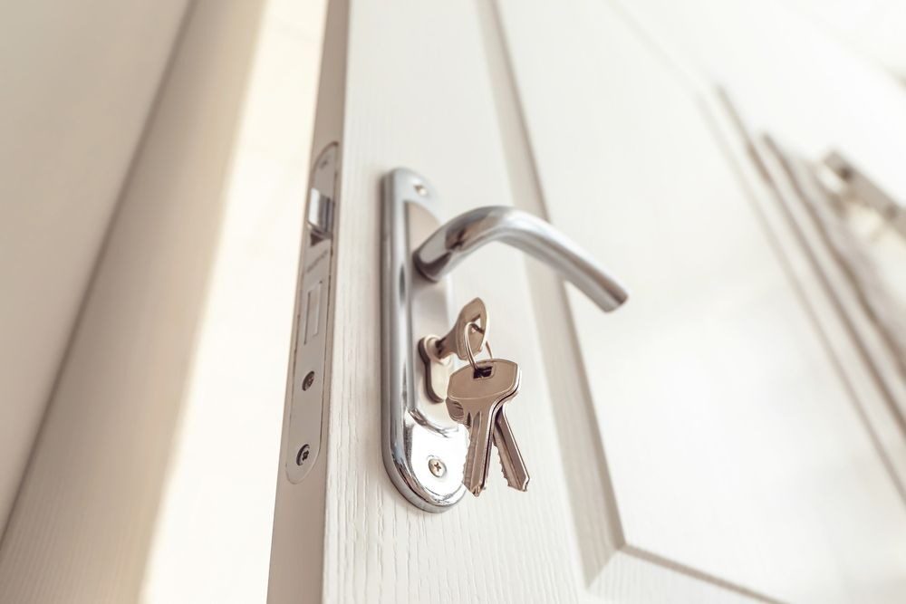

On this page
AT A GLANCE
Lever handles are a common type of door handle used in commercial and residential buildings.
Easy to Use & Secure Door Handles

Lever handles are a common type of door handle used in commercial and residential buildings. Lever handles can be easily operated with just one hand, making them user friendly for people with limited hand strength or when carrying items. Available in a variety of materials and finishes, these handles can complement any décor while also meeting accessibility standards.
At SPL Security Solutions, we offer a range of lever handles to suit your specific needs in contemporary, colonial, federation and traditional styles. From basic lever handles for internal doors to high-security options for external doors, our team can assist you in selecting the right product for your property. We can also incorporate cutting-edge technology such as keypads or smart locks, enhancing your buildings' security by providing controlled access. Whether you need to secure your home, office space or a public building, lever handles offer a practical and secure solution for your doors.
Enquire about our range of lever handles, door knobs, protection plates and other door hardware. You can reach us on (07) 5588 8111. We also supply closers, seals, locks, architectural door hardware and fire door components throughout the Gold Coast, Brisbane and Northern NSW.
Our Levers & Handles
At SPL Security Solutions, we supply levers and handles from top brands like Lockwood, McGrath and many others. Our range includes:
BRASS LEVERS AND HANDLES
- Our brass levers and pull handles are manufactured with high-quality brass, which is lacquered using an electrophoretic process providing excellent resistance to solvents and chemicals. Brass levers and pull handles are designed to provide the highest quality at an attractive price-performance ratio.
Stainless Steel Levers & Handles
- Our stainless steel levers and pull handles are manufactured from high-quality stainless steel. Characteristics such as longevity and corrosion resistance have established stainless steel as a popular material in the manufacture of architectural hardware. Using the latest engineering technology and computer aided design, our stainless steel range of levers, pull handles and accessories are available in both satin and polished finishes.
DIGITAL LEVERS
- Enhance the security and appearance of your home or business with one of our sleek new generation Digital Locks. Keyless electronic security and smart biometric fingerprint locks, that are both elegant and ergonomic.